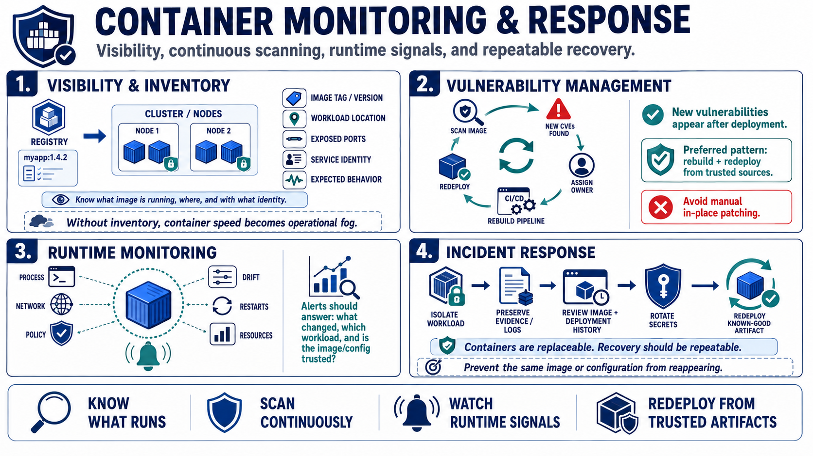

Monitoring, Vulnerability Management, and Incident Response
Connecting to LMS... Progress: in progress

Narration
Container monitoring combines application logs, container logs, runtime signals, orchestrator events, image inventory, policy results, and infrastructure metrics. Teams should know what image is running, where it is running, which version it represents, which ports are exposed, which identities it uses, and whether it is behaving as expected. Without inventory and visibility, container speed becomes operational fog.
Vulnerability management continues after deployment. New vulnerabilities may be discovered in base images, libraries, language packages, and operating system components after an image is already running. Scanning should connect to ownership and rebuild workflows. The durable pattern is rebuild and redeploy from trusted sources, not manually patching individual containers in place and hoping the fix survives the next rollout.
Runtime monitoring can look for unexpected process behavior at a high level, suspicious network activity, failed policy checks, configuration drift, unusual restarts, or changes in resource use. These signals do not replace application security monitoring, but they add context that is specific to containerized environments. Alerts should help teams answer what changed, which workload is affected, and whether a trusted image and configuration are still in use.
Incident response for containers often means isolating the workload, preserving relevant evidence, reviewing images and deployment history, rotating affected secrets, and redeploying from known-good artifacts. Because containers are meant to be replaceable, recovery should be repeatable. The response plan should identify what logs to keep, what registries and pipelines to review, and how to prevent the same image or configuration from reappearing.